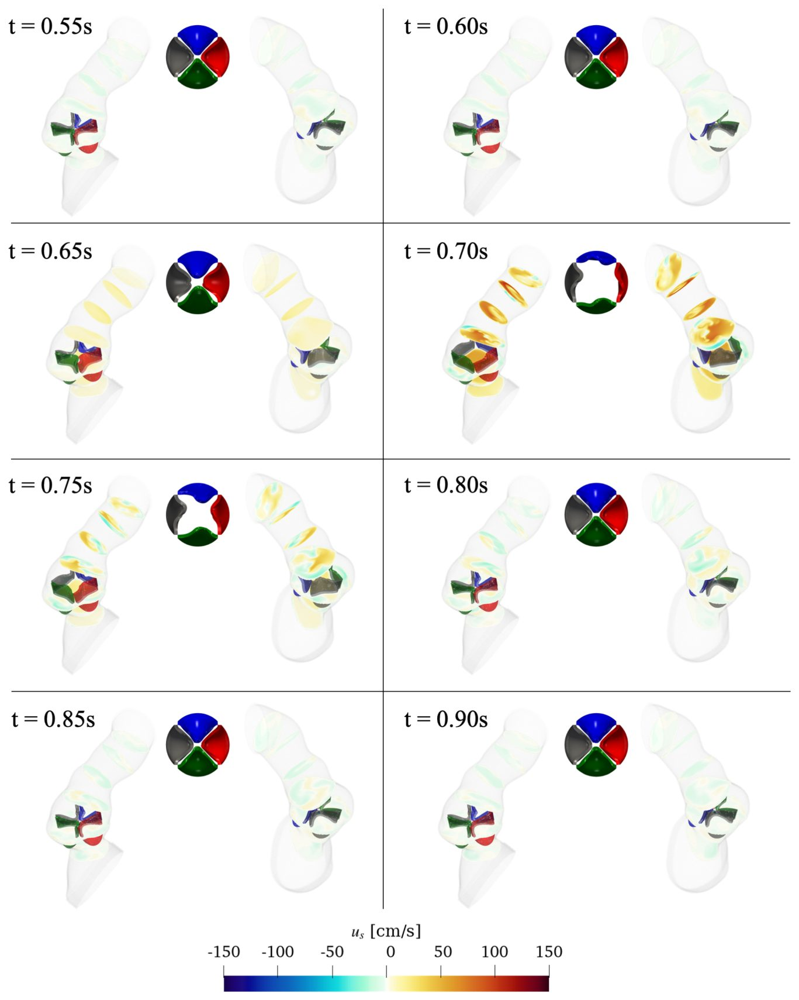

Yurakdagi umumiy arterial o‘zak: qon oqimi qanday kechadi?

Umumiy arterial o‘zak — bu tug‘ma yurak nuqsoni bo‘lib, unda asosiy qon tomirlari ajralmay qoladi. Natijada kislorodga boy va kambag‘al qon aralashib ketadi va klapanlarga yuklama ortadi. Stenford universiteti tadqiqotchilari bemorning individual qon oqimi modelini yaratib, jarrohlikdan oldin va keyin qon qanday harakatlanishini kuzatishdi. Bu ish murakkab anatomik nuqsonlarda yurak faoliyatini tiklash mexanizmlarini tushunishga yordam beradi.
Asosiysi
- Umumiy arterial o‘zak gidrodinamikasini o‘rganuvchi ilk tadqiqot.
- Klapan yopilishidagi nuqsonlar o‘pka arteriyalaridagi uyurmalar bilan bog‘liq.
- Nuqsonli yurakda ham qon oqimining qulay taqsimlanishi tasdiqlandi.
Batafsil
Tadqiqotchilar qon va to‘rt tabaqali klapan o‘zaro ta’sirini modellashtirish uchun «Immersed Boundary Method» usulidan foydalanishdi. Tomirlar va klapan geometriyasi bemorning kompyuter tomografiyasi va exokardiyografiya ma’lumotlari asosida qurildi. Klapan tabaqalarining elastiklik parametrlari bemorning real anatomik o‘lchamlariga moslashtirildi.
Oqimlar tahlili Lagranj kogerent tuzilmalari (LCS) va zarralarni kuzatish (LPT) yordamida amalga oshirildi. Aniqlanishicha, operatsiyadan oldin klapan tabaqalarining assimetrik harakati va qonning orqaga qaytishi (regurgitatsiya) o‘pka arteriyalaridagi past bosim va uyurmalar tufayli yuzaga kelgan. Model qon aralashishiga qaramay, «qulay oqim taqsimoti» mavjudligini ko‘rsatdi: chap qorinchadan qon asosan aortaga, o‘ng qorinchadan esa o‘pka arteriyalariga yo‘naladi. Jarrohlikdan so‘ng yurak gidrodinamikasi me’yorga qaytdi.
Cheklovlar
Tadqiqot faqat bitta bemor ma'lumotlari asosida o'tkazilgan, bu esa natijalarni barcha holatlarga tatbiq etishni cheklaydi.
Maqolaning batafsil tahlili
Annotatsiya
Umumiy arterial o‘zak (UAO) — bu yurakdan chiquvchi ikkita asosiy arteriyaning embrional rivojlanish davrida ajralmasligi natijasida yuzaga keladigan kamyob va og‘ir tug‘ma yurak nuqsonidir. Natijada bitta o‘zak va bitta klapan hosil bo‘lib, ular orqali aralash qon oqadi. Bemorlarning taxminan 25 foizida to‘rt tabaqali klapan kuzatiladi, bu esa ko‘pincha yetishmovchilikka (regurgitatsiya) olib keladi va qayta jarrohlik amaliyotini talab qiladi. Klapan va qon oqimi o‘rtasidagi o‘zaro ta’sir muhimligiga qaramay, UAOda gidrodinamika yetarli darajada o‘rganilmagan.
Muhim
UAO magistral qon tomirlarning ajralmasligi bilan tavsiflanadi, bemorlarning 25 foizida esa klapan disfunksiyasiga moyil bo‘lgan to‘rt tabaqali klapan uchraydi.
Jarrohlik amaliyotidan oldingi va keyingi kompyuter tomografiyasi ma’lumotlari asosida suyuqlik va strukturaning o‘zaro ta’sirini modellashtirish amalga oshirildi. To‘rt tabaqali klapan elastiklik asosida loyihalashtirildi, bunda erkin qirra uzunligi va geometrik balandlik exokardiyografiya ma’lumotlaridan olindi. Qon va klapan o‘rtasidagi o‘zaro ta’sir "Immersed Boundary Method" (botirilgan chegaralar usuli) yordamida simulyatsiya qilindi. Chegaraviy shartlar bemorning individual ko‘rsatkichlariga moslashtirildi. Qon oqimining aralashuvi va oqim yo‘nalishlarini o‘rganish uchun Lagranj kogerent tuzilmalari (LCS) va Lagranj zarrachalarini kuzatish (LPT) usullari qo‘llanildi.
Izoh
"Immersed Boundary Method" — bu suyuqlik oqimi ichidagi egiluvchan jismlar (masalan, klapan tabaqalari) harakatini hisoblash uchun ishlatiladigan matematik usul.
Past bosim va o‘pka arteriyalarining (O‘A) bir tomonlama joylashuvi butun yurak sikli davomida tabaqalar harakatiga ta’sir qilib, assimetrik yopilish va regurgitatsiyaga olib kelishi aniqlandi. Aortadagi holodiastolik teskari oqim O‘A ga qon yetkazib berishni va regurgitatsiya oqimini ta’minlaydi. LCS va LPT tahlillari shuni ko‘rsatdiki, oksihenlangan qon chap qorinchadan aortaga, deoksihenlangan qon esa o‘ng qorinchadan O‘A ga yo‘naltirilgan. Jarrohlikdan so‘ng normal gemodinamika tiklandi.
Bu UAO gidrodinamikasini o‘rganish bo‘yicha ilk tadqiqotdir. Individual modellarda oqim tahlilining sifat va miqdoriy usullaridan foydalanib, O‘A ning bir tomonlama kelib chiqishi sababli buzilgan gemodinamika aniqlandi va tuzatishdan keyin normal holat qanday tiklanishi ko‘rsatildi. Tadqiqot qon oqimining qulay taqsimlanishi (streaming) aralash qon oqimi bilan bog‘liq nuqsonlarda muhim mexanizm ekanligini tasdiqladi.
Ehtiyot bo'ling
Tadqiqot bemorlarga xos individual modellarga asoslangan bo‘lib, natijalar anatomik xilma-xillikni hisobga olgan holda talqin qilinishi kerak.
Kirish
Truncus arteriosus (TA) haqida umumiy ma'lumot
Truncus arteriosus (TA) — bu yurakning ikkita asosiy arteriyasi embrional rivojlanish davrida ajralmasdan qolishi natijasida yuzaga keladigan kamyob va og'ir tug'ma yurak nuqsonidir. Natijada yagona arterial o'zak va bitta klapan hosil bo'ladi, u orqali venoz va arterial qon aralashmasi o'tadi. Qorinchalararo to'siq nuqsoni (QATN) har ikkala qorinchadan qonning ushbu klapanga oqib kelishini ta'minlaydi, o'pka arteriyalari esa bevosita aortadan chiqadi. O'pka arteriyalaridagi qon oqimi ko'pincha aorta oqimidan uch baravar yuqori bo'lib, bu o'pka gipertsirkulyatsiyasiga olib keladi.
Muhim
TA umumiy arterial o'zak va o'pka gipertsirkulyatsiyasi bilan tavsiflanadi, bu hayotning dastlabki haftalarida jarrohlik aralashuvini talab qiladi.
Jarrohlik va klapan morfologiyasi
TA ni jarrohlik yo'li bilan tuzatish QATN ni yopish, o'pka arteriyalarini aortadan ajratish va o'ng qorincha uchun klapanli konduit o'rnatishni o'z ichiga oladi. Operatsiya muvaffaqiyati trunkus klapanining funksiyasiga bog'liq. Ko'pincha klapan tabaqalari qalinlashgan va displastik bo'ladi. Aksariyat hollarda klapan uch tabaqali bo'lsa-da, 25% bemorlarda to'rt tabaqali morfologiya uchraydi (7 ta fenotipga bo'linadi). Bunday bemorlarning uchdan bir qismidan ko'prog'i klapan halqasining kengayishi tufayli yuzaga keladigan regurgitatsiya sababli qayta operatsiyaga muhtoj bo'ladi, bunda trikuspidalizatsiya eng bardoshli usul hisoblanadi.
Mavjud tadqiqotlar sharhi
Echokardiyografiya qo'llanilsa-da, TA dagi gemodinamikani muhandislik nuqtai nazaridan o'rganish kam rivojlangan. Ilgari cho'chqa yuragi modellarida o'tkazilgan tadqiqotlar to'rt tabaqali klapanlarning uch tabaqalilarga nisbatan asinxron yopilishini va sekinroq kinematikasini ko'rsatgan. Shu bilan birga, normal aorta klapanlarining gidrodinamikasi, jumladan, ochilishdagi vorteks hosil bo'lishi va yopilish mexanizmlari batafsil o'rganilgan.
Izoh
Regurgitatsiya — klapan to'liq yopilmaganda qonning orqaga oqib ketishi bo'lib, yurakka qo'shimcha yuklama beradi.
Tadqiqot maqsadi va usullari
TA ning murakkab anatomiyasi qon oqimini tahlil qilishni qiyinlashtiradi. Qonning «afzal oqim» (streaming) nazariyasi mavjud bo'lsa-da, TA uchun bu hali isbotlanmagan. Ushbu ish TA gidrodinamikasini o'rganish bo'yicha birinchi tadqiqotdir. Mualliflar bemorga xos modellarda sifat va miqdoriy tahlil usullaridan foydalanib, jarrohlikdan oldingi va keyingi gemodinamikani baholadilar.
Ehtiyot bo'ling
Tadqiqot bemorga xos modellarga asoslangan, shuning uchun natijalarni barcha TA bemorlariga to'liq tatbiq etishda ehtiyotkorlik talab etiladi.
Truncus arteriozus tuzatilgandan keyin gemodinamika va klapan funksiyasi
Avvalroq biz klapan tabaqalariga bevosita aralashuvsiz umumiy arterial o‘zak (truncus arteriosus) tuzatilgunga qadar va undan keyin gemodinamikaning klapan ishlashiga ta’sirini baholagan edik. Bizning hisoblash modellarimiz operatsiya jarayonida o‘zgaradigan fenotiplarni qayta tiklashga va operatsiyadan keyingi klapan faoliyatini yaxshilash mexanizmlarini aniqlashga qodirligini ko‘rsatdik. Bu bizning yondashuvimizning klinik ahamiyatini va hayotiyligini tasdiqladi.
Muhim
Ishlab chiqilgan hisoblash modellari operatsiyadan keyingi gemodinamik o‘zgarishlarni muvaffaqiyatli aks ettiradi va jarrohlik aralashuvining samaradorligini baholash imkonini beradi.
Ushbu tadqiqotda biz truncus arteriosus (TA) holatidagi gidrodinamikani va uning kislorodga boy hamda kislorod bilan to‘yinmagan qonning aralashish jarayonlari bilan bog‘liqligini tushunish uchun klassik oqim tahlili vositalaridan foydalandik (1-rasm). Qon oqimi, klapan anatomiyasi va qon tomirlari o‘rtasidagi individual suyuqlik-tuzilma o‘zaro ta’sirini (fluid-structure interaction) modellashtirish orqali biz operatsiyadan oldingi holatda g‘ayritabiiy gidrodinamikani aniqladik. Shuningdek, jarrohlik tuzatish oqim parametrlarini sog‘lom yurak ko‘rsatkichlariga yaqin darajaga qaytarishi ko‘rsatildi.
Izoh
Suyuqlik-tuzilma o‘zaro ta’siri (FSI) — bu qon oqimi va qon tomirlari yoki klapanlarning deformatsiyalanuvchi devorlari o‘rtasidagi o‘zaro ta’sirni hisobga oluvchi kompyuter modellashtirish usuli bo‘lib, yurak-qon tomir kasalliklarini tahlil qilishda muhim ahamiyatga ega.
Natijalar
Gemodinamika, to‘lqin shakllari va tabaqalar kinematikasi
Operatsiyadan oldingi holatda bemor anatomiyasi umumiy arterial tanadan (UAT) chap tomonda joylashgan o‘pka arteriyalari (OA) shoxlari bilan tavsiflangan. OA kelib chiqish joyidan proksimalda joylashgan klapan tabaqalari chap va oldingi tabaqalarni o‘z ichiga olgan, o‘ng va orqa tabaqalar esa qarama-qarshi tomonda bo‘lgan. OA ning asimmetrik joylashuvi va o‘pka qon aylanishidagi past bosim g‘ayritabiiy gemodinamikaga olib kelgan: OA «past bosim rezervuari» vazifasini bajargan, bu esa klapandan keyin bosimning pasayishiga sabab bo‘lgan. Klapandagi regurgitatsiya va OA dagi to‘g‘ridan-to‘g‘ri qon oqimi aorta orqali golodiastolik oqim bilan ta’minlangan. Jarrohlik tuzatish gemodinamikani normallashtirib, aorta oqimini tikladi va regurgitatsiyani sezilarli darajada kamaytirdi (3-rasm).
Muhim
UAT ni jarrohlik yo‘li bilan tuzatish klapandan keyingi g‘ayritabiiy past bosimni va golodiastolik regurgitatsiyani bartaraf etib, oqim profillarini normallashtirdi.
Operatsiyadan oldin tanada tashqi egrilikka yo‘naltirilgan asimmetrik oqim va sistola davomida ichki egrilik bo‘ylab retrograd oqim kuzatilgan. OA dagi oqim tezligi aortadagiga qaraganda sezilarli darajada yuqori bo‘lgan. Klapan yopilganda, tanadagi oqim sekinlashgan va yo‘nalishini o‘zgartirgan, OA da esa to‘g‘ridan-to‘g‘ri oqim saqlanib qolgan. Diastola davomida aortadan klapan orqali o‘ng qorinchaga (O‘Q) retrograd oqim kuzatilgan. Operatsiyadan keyin (4-rasm) diastoladagi oqim harakati sezilarli darajada kamaydi va golodiastolik teskari oqim bartaraf etildi.
Bosim va oqim egri chiziqlarini tahlil qilish (5A-rasm) shuni ko‘rsatdiki, operatsiyadan oldin O‘Q ning zarba hajmiga qo‘shgan hissasi chap qorinchaga (ChQ) qaraganda 25% ga yuqori bo‘lgan, sistola davomida eng yuqori tezliklar 16,25 ml/s (ChQ) va 26,67 ml/s (O‘Q) ni tashkil etgan. Regurgitatsiyani hisobga olmaganda umumiy zarba hajmi 4,87 ml, klapandan keyingi eng yuqori oqim esa 42,76 ml/s bo‘lgan. Klapan sohasidagi operatsiyadan oldingi Reynolds soni 1721 ni tashkil etgan, operatsiyadan keyin u 618 gacha tushgan, sistola davomida eng yuqori oqim esa 31,14 ml/s ga teng bo‘lgan.
Izoh
Reynolds soni — oqimning inertsiya va qovushqoqlik kuchlari nisbatini ifodalovchi o‘lchamsiz kattalik; yuqori qiymatlar turbulentlikni, past qiymatlar esa laminar (tartibli) oqimni bildiradi.
Sistemali va o‘pka qon aylanishi o‘rtasidagi bosim farqi 3,2:1 nisbatdagi oqimni yaratgan. Operatsiyadan oldin tanadagi bosim g‘ayritabiiy darajada past bo‘lib, aorta va o‘pka bosimlari oralig‘ida bo‘lgan. OA ning asimmetriyasi tabaqalarning notekis yopilishiga olib kelgan (5B-rasm). Sistola davomida maksimal siljish: chap — 3,6 mm, oldingi — 3,7 mm, orqa — 3,0 mm, o‘ng — 2,7 mm. Koaptatsiya balandligi (tabaqalar tutashuv maydoni) geometrik balandlikning 20,0% ini tashkil etgan. Tuzatishdan keyin yopilish simmetrikroq bo‘ldi (o‘ng — 3,3 mm, orqa — 4,3 mm, chap — 4,3 mm, oldingi — 3,6 mm), koaptatsiya balandligi esa 30,8% gacha oshdi.
Vortekslarning rivojlanishi va tarqalishi
Sistolik tezlanish davrida klapan ochilib, boshlang‘ich vorteks hosil bo‘ladi. Uning shakli tabaqalar geometriyasi va gemodinamikaga bog‘liq. To‘rt tabaqali klapanda to‘rt bo‘lakli vorteks kuzatiladi, ammo qon tomirlar anatomiyasi unga kuchli ta’sir ko‘rsatadi. Operatsiyagacha bo‘lgan holatda o‘pka arteriyalaridagi (O‘A) bo‘ylama vortekslar butun yurak sikli davomida saqlanib qolgan va klapan ochilishi bilan qo‘shilib ketgan (6A-rasm).
Muhim
Operatsiyagacha bo‘lgan holatda vortekslar kamroq barqaror va tezroq parchalanadi, diastolada esa o‘ng qorinchaga regurgitatsiya kuzatiladi.
Operatsiyagacha vorteks kamroq kogerent bo‘lib, tezroq buzilgan. Sistolada magistralning ichki egriligi bo‘ylab mayda vortekslar, diastolada esa o‘ng qorinchaga yo‘nalgan regurgitatsiya oqimi kuzatilgan. Operatsiyadan so‘ng (O‘A olib tashlangach), vorteksning uch tomoni klapan teshigiga parallel qolgan, to‘rtinchisi esa aorta egriligi bo‘ylab cho‘zilgan «soch qadag‘ich» shaklidagi vorteksni hosil qilgan. Diastolada aortada kogerent tuzilmalar aniqlanmagan, bu turbulentlikning to‘liq so‘nganini bildiradi.
Lagranj kogerent tuzilmalari
Operatsiyagacha bo‘lgan holatdagi Lagranj kogerent tuzilmalari (LCS) qorinchaaro to‘siq nuqsoni (QATN) bo‘ylab aniq material sirtni va sistola vaqtida klapan darajasida O‘A ta’sirini ko‘rsatdi.
Izoh
Lagranj kogerent tuzilmalari (LCS) va FTLE maydonlari — bu suyuqlik oqimining «skeletini» vizualizatsiya qiluvchi matematik usullar bo‘lib, ular turli xil oqim xulq-atvoriga ega hududlarni ajratib turuvchi chegaralarni ko‘rsatadi.
FTLE maydonining lokal maksimumlari bilan aniqlanadigan material sirt massa o‘tkazish uchun to‘siq vazifasini bajaradi. Operatsiyagacha bunday sirt QATN va magistral klapan bo‘ylab o‘tgan. FTLE vizualizatsiyasi shuni ko‘rsatdiki, bu sirt aortaga yo‘nalgan oqimni O‘Aga yo‘nalgan oqimdan ajratib turadi. O‘A ta’siri klapangacha yetib borgan. Klapan orqali o‘tadigan oqim o‘ng qorinchadan O‘Aga va magistraldan aortaga yo‘nalgan qismlarga bo‘lingan. Operatsiyadan so‘ng, O‘A yo‘qligi sababli, FTLE maydonlari aorta oqimining og‘ishini va rekonstruksiya sohasida retsirkulyatsiya zonalarini ko‘rsatadi.
Oksigenlangan va deoksigenlangan qon oqimining namunalari
Zarrachalarni Lagranj usulida kuzatish shuni ko‘rsatdiki, chap va o‘ng qorinchalardan kelayotgan qon klapanga spiral shaklida harakatlanadi (6C-rasm). Oqimlar orasidagi chegara sirti aortaga kirguncha saqlanib qoladi, bu sistola vaqtida QATN darajasida qon aralashuvi minimal ekanligini tasdiqlaydi. Sistolaning katta qismida o‘ng qorinchadan kelgan deoksigenlangan qon O‘Aga, chap qorinchadan kelgan oksigenlangan qon esa aortaga yo‘naladi.
Muhim
Qorinchalardan kelayotgan oqimlarning ajralishi bemorda yuqori saturatsiyani (21% FiO2 da 93%) tushuntiradi, bu umumiy arterial magistralda qonning samarali aralashish gipotezasini tasdiqlaydi.
Sistola oxirida oqim sekinlashganda, aortadan qaytgan qon O‘A darajasida aralashishni keltirib chiqaradi. Diastolada oqim chegaralari aniq emas. Ushbu ma’lumotlar umumiy arterial magistralga ega bemorda klinik jihatdan qayd etilgan yuqori saturatsiyani (21% FiO2 da 93%) tushuntiradi va anatomik nuqson bo‘lsa ham, qon oqimlarining samarali ajralishi mumkinligini isbotlaydi.
Muhokama
Ushbu tadqiqot truncus arteriosus (TA) gidrodinamikasini o‘rgangan birinchi ishdir. Biz g‘ayritabiiy gidrodinamika o‘pka arteriyalarining (OA) joylashuviga bog‘liqligini aniqladik; ular bosim pastligi zonasi sifatida ishlaydi va trunkus oqimi hamda klapan o‘rtasida assimetrik ta’sirni keltirib chiqaradi. Jarrohlik amaliyoti davomida OA ning uzilishi normal gidrodinamikani tiklaydi va klapan regurgitatsiyasini sezilarli darajada kamaytiradi.
Muhim
OA ning bir tomonlama joylashuvi bosim gradientini hosil qilib, oqim assimetriyasiga va klapan tabaqalarining noto‘g‘ri yopilishiga olib keladi.
Oqim assimetriyasining asosiy sababi tizimli qon aylanishiga nisbatan o‘pka qon aylanishidagi bosimning pastligi va o‘pka tomirlari qarshiligining kamligidir. Trunkus klapani orqali o‘tayotgan qon oqimining vortikligi (aylanma harakati) OA bo‘ylab yo‘naltirilgan vortikslarni hosil qiladi. Bu past bosimli vortikslar klapan ostidagi bosim maydonini notekis qiladi, natijada sistola vaqtida klapan tabaqalari notekis ochiladi va diastola boshida kechikib yopiladi. Bu esa tabaqalarning to‘liq yopilmasligiga va regurgitatsiyaga olib keladi. Tomir geometriyasining qayta shakllanishi (sinuslar va sinotubulyar birikma) tabaqalarning yaxshiroq ishlashiga yordam beradi.
Izoh
Koaptatsiya — klapan tabaqalarining bir-biriga jips yopishib, qonning orqaga qaytishiga to‘sqinlik qilish jarayoni.
TA odatda qonning to‘liq aralashuvi bilan kechadigan nuqson hisoblansa-da, biz chap qorinchadan (ChQ) aortaga va o‘ng qorinchadan (O‘Q) OA ga qonning qisman ajralib oqishini (streaming) aniqladik. FTLE maydonlari va Lagranj zarrachalarini kuzatish klapandan o‘tgunga qadar qon oqimlarining aralashuvi juda kamligini tasdiqladi. Bu bemorda kuzatilgan yuqori kislorod saturatsiyasini tushuntirib beradi.
Ehtiyot bo'ling
Tadqiqot raqamli oqim maydonlariga asoslangan bo‘lib, kelgusida adveksiya-diffuziya modellari orqali miqdoriy baholashni talab qiladi.
Metodlar
Biz qon oqimi, klapan va tomir anatomiyasi o‘rtasidagi o‘zaro ta’sirni (FSI) modellashtirish uchun exokardiyografiya ma’lumotlaridan foydalandik. To‘rt tabaqali klapanni qurish uchun tasdiqlangan yondashuv qo‘llanildi. Qorinchalar qisqarishi natijasida yuzaga keladigan vaqtga bog‘liq oqim kamera aktivatsiyasi modeli orqali simulyatsiya qilindi. Oqimni baholash uchun ChQ va O‘Q ga mos ravishda «kislorodli» va «kislorodsiz» zarrachalar kiritildi. Kelgusida OA joylashuvini parametrlash va adveksiya-diffuziya modellashtirish orqali aniqroq natijalarga erishish rejalashtirilgan.
Usullar
Gidrodinamika va klapan tuzilishini modellashtirish
Klapan tabaqalari va qon tomir devorlarining qon oqimi bilan o‘zaro ta’siri IBAMR dasturiy kutubxonasida amalga oshirilgan Immersed Boundary Method yordamida modellashtirildi. Suyuqlik zichligi \rho = 1.0 g/sm³ va dinamik qovushqoqligi µ = 0.04 Puaz bo‘lgan siqilmaydigan muhit sifatida qaraldi. Navier-Stokes tenglamalariga suyuqlikka ta’sir qiluvchi strukturaviy kuchlar kiritildi. Jami uchta yurak sikli simulyatsiya qilindi, tahlil uchun ikkinchi sikl tanlab olindi.
Izoh
Immersed Boundary Method — bu moslashuvchan tuzilmalarning (masalan, klapan tabaqalari) qovushqoq suyuqlik bilan o‘zaro ta’sirini modellashtirishga imkon beruvchi hisoblash usuli bo‘lib, unda obyekt chegaralari oqim to‘riga «botiriladi».
Klinik ma’lumotlar va geometriya
Chaqaloq bemor operatsiyadan oldingi va keyingi tasvirlarning mavjudligi hamda klapanda jarrohlik o‘zgarishlari yo‘qligi asosida tanlab olindi. Bemorga to‘rt tabaqali klapan (A turi) va arterial stvol (II turi) tashxisi qo‘yildi. KT tasvirlarini segmentatsiyalash SimVascular dasturida amalga oshirilib, qon tomirlarning 3D geometriyasi yaratildi (Rasm 2A).

Klapanni loyihalash va chegaraviy shartlar
To‘rt tabaqali klapan elastiklikka asoslangan dizayn yondashuvi yordamida qurildi. Tabaqalarning geterogen tola tuzilishi va material qattiqligi muvozanat tenglamalari orqali aniqlandi (Rasm 2B). Bemorga xos bo‘lgan erkin qirra uzunligi (FEL) va geometrik balandlik (GH) exokardiyografiya orqali o‘lchandi. Operatsiyadan oldingi konfiguratsiya uchun FEL 7.56 mm va GH 6.5 mm, operatsiyadan keyingi uchun esa FEL 8.95 mm va GH 6.5 mm qilib belgilandi (Rasm 2C). Chegaraviy shartlar 3D FSI simulyatsiyalari va svZeroDSolver yordamida 0D model o‘rtasidagi iteratsiyalar orqali sozlandi (Rasm 2C).
Oqim va kinematikani tahlil qilish
Oqim maydonini baholash uchun tezlikning bo‘ylama komponenti u_s hisoblandi. Bosim va oqim to‘lqinlari kirish (LV, RV) va chiqish (aorta, LPA, RPA) qismlarida, shuningdek, klapan komissuralaridan 0.12 sm yuqorida tahlil qilindi. Tabaqalar kinematikasi markaziy uchini kuzatish va diastola davomida koaptatsiya nuqtasigacha bo‘lgan masofani hisoblash orqali baholandi. Vorteks rivojlanishi Q-kriteriy, transport to‘siqlari esa FTLE yordamida vizuallashtirildi. Qon aralashuvi massasiz Lagranj zarralari orqali kuzatildi: LV dan zarralar (qizil) va RV dan zarralar (ko‘k) klapan ochilishidan oldin chiqarilib, ikkinchi sikl davomida kuzatildi.




Rasmning to'liq tavsifi
5-rasm: (A) Kirish (chap qorincha, o'ng qorincha) va chiqish (aorta, chap va o'ng o'pka arteriyasi) qismlarida fazoviy o'rtacha hisoblangan operatsiyagacha va operatsiyadan keyingi bosim va oqim to'lqin shakllari. Yashil egri chiziq ('Klapan') klapandan darhol distal joylashgan fazoviy o'rtacha oqim va bosimni tavsiflaydi, ular klapan komissurasi darajasidan 0,12 sm yuqorida (operatsiyagacha bo'lgan konfiguratsiya uchun o'pka arteriyasi boshlanishidan pastda) joylashgan kesmada hisoblanadi. O'pka arteriyalari bosim drenaji vazifasini bajargani uchun, klapandan darhol pastdagi bosim darajalari operatsiyagacha bo'lgan konfiguratsiyada operatsiyadan keyingiga qaraganda pastroq. (B) Operatsiyagacha va operatsiyadan keyingi konfiguratsiyalar uchun bir yurak sikli davomida tabaqalar kinematikasi. O'pka arteriyalarining bir tomonlama joylashuvi natijasida hosil bo'lgan quyi oqimning notekis maydoni va truncal klapan o'rtasidagi o'zaro ta'sir klapanning assimetrik yopilishiga olib keldi. Tabaqalar juft bo'lib ochildi va yopildi, bunda o'pka arteriyalaridan yuqorida joylashgan tabaqalar kengroq ochilib, kechroq yopildi. Truncus tuzatish orqali sog'lom gemodinamikani tiklash klapanning yanada simmetrik yopilishiga olib keldi.

Rasmning to'liq tavsifi
6-rasm: (A) Operatsiyagacha va operatsiyadan keyingi konfiguratsiyada klapan ochilgandan keyin, sistola cho'qqisida va diastola o'rtasida boshlang'ich vorteks uchun klapan halqasi tekisligiga normal tezlik komponenti bo'yicha ranglangan Q-mezonining izo-sirtlari. To'rt tabaqali klapan morfologiyasi to'rt qanotli boshlang'ich vorteksni yaratdi. Truncus jarrohligidan oldin, o'pka arteriyalaridagi oqim bo'ylab yo'naltirilgan vortekslar butun yurak sikli davomida saqlanib qolgan holda truncusdagi oqim maydoni va vorteks dinamikasiga ta'sir qildi. (B) Lagranj kogerent tuzilmalari (LCS): operatsiyagacha va operatsiyadan keyingi konfiguratsiya uchun to'g'ridan-to'g'ri chekli vaqtli Lyapunov eksponenti (FTLE) skalyar maydonlari. Vaqt lahzalari va masshtablar tegishli oqim xususiyatlariga asoslanib tanlangan. VSD bo'ylab aralashish darajasi ahamiyatsiz bo'lgan aniq moddiy sirt aniqlandi. LCS sistola davomida klapan darajasida o'pka arteriyalarining ta'sirini aniqladi. Diastola davomida aorta tashqi egriligidan oqim o'pka arteriyalariga kirdi. Truncus jarrohligidan so'ng, to'rt tabaqali klapan tufayli kvadrat shaklidagi aorta oqimi va diastola davomida ahamiyatsiz oqim bilan sistolik gemodinamika tiklandi. (C) Lagranj zarrachalarini kuzatish: chap va o'ng qorinchalarda joylashtirilgan 'oksigenlangan' (qizil) va 'deoksigenlangan' (ko'k) zarrachalarning turli ko'rish burchaklarida va yurak siklining turli vaqt nuqtalarida taqsimlanishi. Zarrachalar klapan ochilishidan biroz oldin joylashtiriladi va bir yurak sikli davomida kuzatiladi. Lagranj zarrachalarini kuzatish o'ng qorinchadan o'pka arteriyalariga va chap qorinchadan aortaga oqim bilan oksigenlangan va deoksigenlangan oqimlarning qulay oqimini aniqladi.
Tadqiqot sxemasi
Preprint hali taqriz qilinmagan. Xulosalar dastlabki.
Manba
| Manba | Kategoriya | Preprint litsenziyasi |
|---|---|---|
| arXiv | physiology | arxiv |
Manbalar
| Manba | Havola |
|---|---|
| Страница препринта | arxiv.org |
| Полный текст (PDF) | arxiv.org |
| DOI | doi.org |
| Метаданные Crossref | api.crossref.org |
| Europe PMC | europepmc.org |
| Иллюстрация | commons.wikimedia.org.jpg) |